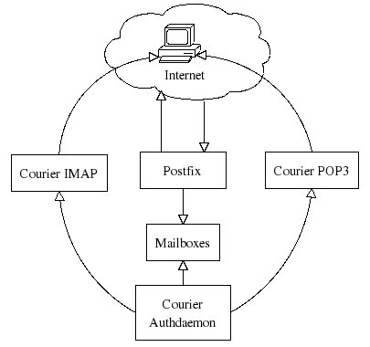
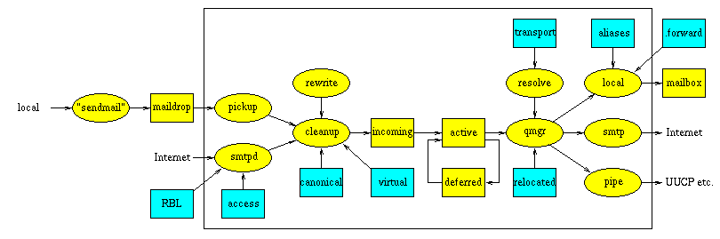
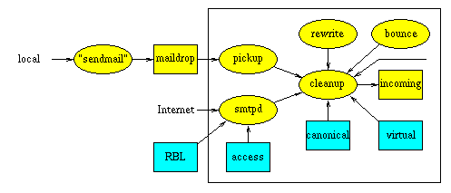

Introduction
This document will teach you how to set up a basic Postfix mail server with IMAP and POP3 services. It does not included advanced topics such as integrating virus-checking and spam-filtering, which are dealt with in PostfixVirtualMailBoxClamSmtpHowto and PostfixCompleteVirtualMailSystemHowto.
Setup Overview
In our setup, Postfix sends and receives mail from Internet and stores them in the user mailboxes while clients on the Internet can retrieve their mails via Courier IMAP or POP3. The user authentication is done by Courier Authdaemon. The following diagram shows this process.

Anatomy of Postfix
Components
The following figure shows the main Postfix system components, and the main information flows between them.

- Yellow ellipsoids are mail programs.
- Yellow boxes are mail queues or files.
- Blue boxes are lookup tables.
- Programs in the large box run under control by the Postfix resident master daemon.
- Data in the large box is property of the Postfix mail system.
Receiving Mail
When a message enters the Postfix mail system, the first stop is the incoming queue. The figure below shows the main components that are involved with new mail.

Mail is posted locally. The Postfix sendmail program invokes the privileged postdrop program which deposits the message into the maildrop directory, where the message is picked up by the pickup daemon. This daemon does some sanity checks, in order to protect the rest of the Postfix system.
Mail comes in via the network. The Postfix SMTP server receives the message and does some sanity checks, in order to protect the rest of the Postfix system.
Mail is generated internally by the Postfix system itself, in order to return undeliverable mail to the sender. The bounce or defer daemon brings the bad news.
Mail is forwarded by the local delivery agent, either via an entry in the system-wide alias database, or via an entry in a per-user .forward file. This is indicated with the unlabeled arrow.
Mail is generated internally by the Postfix system itself, in order to notify the postmaster of a problem (this path is also indicated with the unlabeled arrow).The Postfix system can be configured to notify the postmaster of SMTP protocol problems, UCE policy violations, and so on.
The cleanup daemon implements the final processing stage for new mail. It adds missing From: and other message headers, arranges for address rewriting to the standard user@fully.qualified.domain form, and optionally extracts recipient addresses from message headers. The cleanup daemon inserts the result as a single queue file into the incoming queue, and notifies the queue manager of the arrival of new mail. The cleanup daemon can be configured to transform addresses on the basis of canonical and virtua table lookups.
On request by the cleanup daemon, the trivial-rewrite daemon rewrites addresses to the standard user@fully.qualified.domain form.
Install Postfix
In this setup I assume that your domain is yourdomain.com and it has a valid MX record setup as mail.yourdomain.com. Remember to replace yourdomain.com with your actual domain in the example codes in this howto. Also I assume that you know what an MX record is. To find out MX your type in a terminal:
dig mx yourdomain.com
To install postfix
sudo apt-get install postfix
Install mailx package for use as command mail utility program. Mail command is installed with this package.
sudo apt-get install mailutils
Test your default setup
Add a user before you start this.
sudo useradd -m -s /bin/bash fmaster sudo passwd fmaster
Test your default installation using the following code segment.
telnet localhost 25
(if that doesn't work, check to see if postfix is running)
sudo postfix status
If it is not running, start it
sudo postfix start
Postfix will prompt like following in the terminal so that you can use to type SMTP commands.
Trying 127.0.0.1... Connected to mail.fossedu.org. Escape character is '^]'. 220 localhost.localdomain ESMTP Postfix (Ubuntu)
Type the following code segment in Postfix's prompt.
ehlo localhost mail from: root@localhost rcpt to: fmaster@localhost data Subject: My first mail on Postfix Hi, Are you there? regards, Admin . (Type the .[dot] in a new Line and press Enter ) quit
Check the mailbox of fmaster
su - fmaster mail
When you type mail command an output like follows display in your terminal.
Mail version 8.1.2 01/15/2001. Type ? for help. "/var/mail/fmaster": 2 messages 2 new >N 1 root@localhost Mon Mar 6 12:49 13/479 Just a test N 2 root@localhost Mon Mar 6 12:51 15/487 My first mail &
You will observe that mails are indexed by numbers and you can type the number of which the mail that you want to read. For example type no "2" to read the 2nd mail. The type "q" to quit. The mail will be written to a file called mbox in user's home directory. According to our example it will be /home/fmaster/mbox.
All messages in an mbox type of mailbox are concatenated and stored in a single file. The beginning of each message is indicated by a line whose first five characters are "From " and a blank line is appended to the end of each message
Setting Postfix Support for Maildir-style Mailboxes
Maildir is a format for an e-mail spool that does not require file locking to maintain message integrity because the messages are kept in separate files with unique names. A Maildir is a directory (often named Maildir) with three subdirectories named tmp, new, and cur. The subdirectories should all reside on the same filesystem.
Another reason to use Maildir format is that Courier IMAP/POP3 servers only work with Maildir format of mailboxes.
Please find out more about Maildir here
Instruct Postfix to use Maildirs instead of Mboxes:
sudo postconf -e "home_mailbox = Maildir/"
Ensure Procmail isn't used: (if the step was taken during dpkg-reconfigure, by mistake)
sudo postconf -e "mailbox_command = "
Restart Postfix to make changes effect.
sudo /etc/init.d/postfix restart
Test your setup again
Check the mailbox of fmaster
su - fmaster MAIL=/home/fmaster/Maildir mail
Installing courier IMAP and POP3
sudo apt-get install courier-pop sudo apt-get install courier-imap
Adding your local domains to postfix
Add your domains to mydestination: (my destination is a value in the postfix configuration file. to view your existing setting, type sudo postconf mydestination)
sudo postconf -e "mydestination = mail.fossedu.org, localhost.localdomain, localhost, yourdomain.com"
(note that command above will overwrite your previous settings of mydestination, so make note of your previous entries)
Add your local networks, too:
Postfix comes with the localhost (127.0.0.1) entry; you may have others, here we assume your LAN is on 192.168.1.0/24. Make changes to suit your situation.
sudo postconf -e "mynetworks = 127.0.0.0/8, 192.168.1.0/24"
Make Postfix to receive mail from the Internet
Instruct Postfix to receive on all interfaces:
sudo postconf -e "inet_interfaces = all"
(optional) Make Postfix accept IPv4, IPv6 protocols
If you're not using IPv6 yet, and you're paranoid, use "ipv4" instead of "all". Again, this is to suit your own network sensibilities.
sudo postconf -e "inet_protocols = all"
Finally, restart Postfix;
sudo /etc/init.d/postfix restart
Test your setup again using following code:
netcat mail.yourdomain.com 25 ehlo yourdomain.com mail from: root@yourdomain.com rcpt to: fmaster@yourdomain.com data Subject: My first mail for my domain Hi, Are you there? regards, Admin . (and Enter In a new Line) quit
Check the mailbox of fmaster
su - fmaster cd Maildir/new ls
Now you will see mail has a separate file.
Testing Courier POP3
Type in a terminal:
netcat mail.yourdomain.com 110
Use the following example code segment for your test. Be intelligent to tweak the changes appropriately to your environment. An output like follows will display in your terminal.
Connected to mail.yourdomain.com (208.77.188.166). Escape character is '^]'. +OK Hello there.
Type the following code segment in the prompt provided by the Courier POP3 server. I assume that you are intelligent enough not to type the lines which starts from +OK
user fmaster +OK Password required. pass password +OK logged in. quit
Testing Courier IMAP
Type in a terminal:
netcat mail.yourdomain.com 143
Use the following example code segment for your test. Be intelligent and tweak the changes appropriately to your environment. An output like follows will display in your terminal.
* OK [CAPABILITY IMAP4rev1 UIDPLUS CHILDREN NAMESPACE THREAD=ORDEREDSUBJECT THREAD=REFERENCES SORT QUOTA IDLE ACL ACL2=UNION STARTTLS XCOURIEROUTBOX=INBOX.Outbox] Courier-IMAP ready. Copyright 1998-2005 Double Precision, Inc. See COPYING for distribution information.
Type the following code segment in the prompt provided by the Courier IMAP server.
a login fmaster password a OK LOGIN Ok. a logout
Local Alias database
When mail is to be delivered locally, the local delivery agent runs each local recipient name through the aliases database. The mapping does not affect addresses in message headers. Local aliases are typically used to implement distribution lists, or to direct mail for standard aliases such as postmaster to real people. The table can also be used to map Firstname.Lastname addresses to login names.
Alias lookups are enabled by default and you will see following code segment in main.cf file.
... alias_maps = hash:/etc/aliases ...
Creating an alias for an account
The following codes illustrate how you can setup an alias. This step is optional since we are going to configure virtual mail domains later in this howto. I have added this step to make sure you understand how you can do this in case it is required.
Create a user
sudo useradd -m -s /bin/bash sysadmin sudo passwd sysadmin
Edit the alias table
Open the alias file with:
sudo vi /etc/aliases
Add the following code:
fmaster: sysadmin
To make your changes take effect type:
sudo newaliases
To test your changes send a mail to fmaster and check the mail in /home/sysadmin/Maildir/new folder.
Per User .forward Files
Users can control their own mail delivery by specifying destinations in a file called .forward in their home directories. The syntax of these files is the same as system aliases, except that the lookup key and colon are not present.
I will illustrate an example here:
Assume that you need to forward all the mails which come to the sysadmin account to an another account. Enter the following commands:
su - sysadmin touch .forward
Then open the .forward file
vi .forward
Add the following code:
fossedu@example.com
Remember to use email address which exists in this exercise.
Now send a mail to sysadmin and mail should come to fossedu@example.com
Postfix virtual Aliases for separate domains and Linux system accounts
With this approach, every hosted domain can have its own info etc. email address. However, it still uses Linux system accounts for local mailbox deliveries.
With virtual alias domains, each hosted address is aliased to a local UNIX system account or to a remote address. The example below shows how to use this mechanism for the fossedu.org and linuxelabs.com domains.
Inside the main.cf file, we tell it how to handle these virtual domains:
sudo postconf -e "virtual_alias_domains = fossedu.org linuxelabs.com" sudo postconf -e "virtual_alias_maps = hash:/etc/postfix/virtual"
Edit the /etc/postfix/virtual file:
Add two Linux system accounts
sudo useradd -m -s /bin/bash sigiri sudo useradd -m -s /bin/bash kala
Set passwords for the above users.
sudo passwd sigiri sudo passwd kala
sudo vi /etc/postfix/virtual
Add the following code segment:
info@fossedu.org sigiri info@linuxelabs.com kala
To create a Map Database type :
sudo postmap /etc/postfix/virtual
postmap is utility program that will convert /etc/postfix/virtual to /etc/postfix/virtual.db in Berkley DB format, so that Postfix can access the data faster.
Restart Postfix to make changes take effect:
sudo /etc/init.d/postfix restart
Send mails to both info@fossedu.org and info@linuxelabs.com and those mails should come to mailboxes of sigiri and kala respectively.